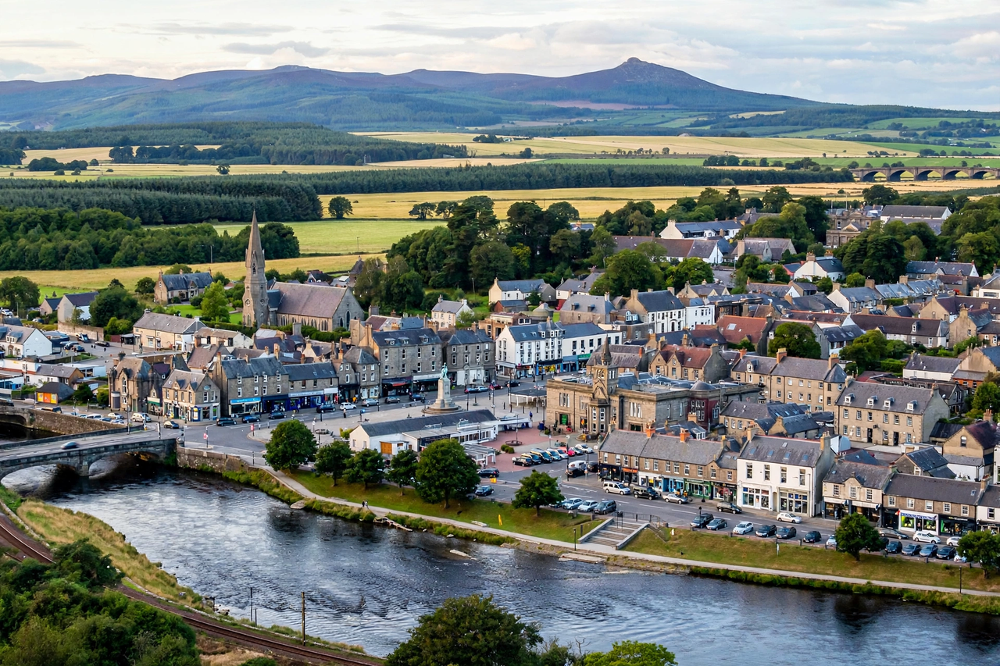

| Inverurie | |
|---|---|
| Scottish Gaelic | Inbhir Uaraidh |
| Council area | Aberdeenshire, Scotland |
| Population | c. 13,600 (2020 estimate) |
| Location | At the confluence of the rivers Ury and Don, 16 miles NW of Aberdeen |
| Known for | Battle of Inverurie (1308); Battle of Harlaw (1411, nearby); railway locomotive works |

Inverurie (Scottish Gaelic: Inbhir Uaraidh, "mouth of the River Ury") is a town in Aberdeenshire, Scotland, lying in the valley of the River Don at its confluence with the River Ury, about 16 miles (26 km) north-west of Aberdeen. With a population of roughly 13,600, it is one of the fastest-growing towns in Scotland, functioning largely as a commuter settlement for Aberdeen's energy industry while retaining an agricultural market-town character. The name is popularly associated with the motto "Inverurie — heart of the Garioch", the Garioch being the fertile surrounding district.
The area is rich in prehistory: recumbent stone circles characteristic of north-east Scotland stand nearby, and the Pictish symbol stones known as the Brandsbutt Stone (in the town) and the Maiden Stone date from the early medieval period. Inverurie enters history in the Wars of Scottish Independence: in May 1308 Robert the Bruce, newly recovered from illness, defeated the forces of his rival John Comyn, Earl of Buchan, at the Battle of Inverurie (Barra), and followed it with the brutal harrying of Buchan. In 1411 the bloody Battle of Harlaw was fought just north of the town between Donald of Islay, Lord of the Isles, and the Earl of Mar's Lowland army — remembered in ballad as one of Scotland's bloodiest battles, earning Harlaw the name "Reid Harlaw" (red Harlaw).
The town was created a royal burgh in the sixteenth century (a charter of Mary, Queen of Scots, 1558, is often cited, building on earlier burgh status). The Jacobite rising of 1745 saw a skirmish at Inverurie in December 1745. The nineteenth century transformed the burgh: the Aberdeen Canal and then the railway (arriving in 1854) made it a transport hub, and the Great North of Scotland Railway established its Inverurie Locomotive Works in 1902, for decades the town's principal employer until closure in 1969. Paper-making at nearby Port Elphinstone also employed many residents.
Inverurie sits on the A96 Aberdeen–Inverness road and on the Aberdeen–Inverness railway line, with Inverurie station providing commuter services into Aberdeen. The town is overlooked to the west by the distinctive profile of Bennachie (528 m), whose peak, the Mither Tap, bears an Iron Age hillfort and is a landmark across the Garioch. Neighbouring settlements include Kintore, Oldmeldrum, and the village of Daviot.
Modern Inverurie serves as a retail and service centre for central Aberdeenshire, with an agricultural mart, supermarkets, and the Garioch Heritage Centre, which occupies the restored locomotive works site and tells the story of the district. Inverurie Academy provides secondary education. The town's growth since the 1970s has tracked the North Sea oil and gas industry, with housing estates expanding steadily toward Kintore.
Inverurie Loco Works F.C., founded by railway works employees in 1903, plays in the Highland League at Harlaw Park. The town also hosts a rugby club, a golf club founded in 1923, and cricket in the Aberdeenshire leagues.